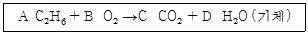
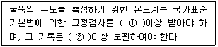

대기환경산업기사 (2005-03-20 기출문제)
1과목: 대기오염개론
1. 다음 설명 중 틀린 것은?
- 대류권에서는 고도가 높아질수록 온도가 평균적으로 낮아진다.
- 성층권에서는 고도가 높아질수록 온도가 평균적으로 높아진다.
- 오존층에서는 오존의 생성과 소멸이 계속적으로 일어나면서 오존의 농도를 유지한다.
- 오존층은 성층권과 열권의 중간에 형성되어 지구상 생물에 영향이 큰 자외선을 흡수한다.
(정답률: 알수없음)

2. 염소를 배출하는 공장이 있다. 이 공장에서 배출되는 염소(Cl2)가 0℃, 1기압에서 1.6 ppm 일 때, ㎍/m3농도는?
- 약 5100
- 약 4100
- 약 3100
- 약 2100
(정답률: 알수없음)
3. 국지풍에 관한 설명 중 틀린 것은?
- 육지와 바다는 서로 다른 열적 성질 때문에 주간에는 바다로부터, 야간에는 육지로부터 바람이 부는 해륙풍이 생겨난다.
- 해륙풍이 장기간 지속되지 않을 때는 국지순환의 폐쇄로 해안가 산업지역에 대기오염물질의 축적이 일어난다.
- 산악지형인 경우, 야간에는 상부에서부터 장파복사 냉각이 시작되어 중력에 의한 하강기류가 생기며 이를 산풍이라 한다.
- 바람장미를 이용하여 특정지역 오염물질의 대체적인 확산패턴을 이해할 수 있다.
(정답률: 알수없음)
4. 질소 산화물에 관한 설명으로 알맞은 것은?
- NO는 엷은 갈색기체로 화학적으로 안정하며 공기보다 약간 무겁다.
- NO2는 적갈색, 자극성기체로 NO보다 독성이 5~7배정도 강하다.
- NO는 혈액중의 Hb와의 결합력이 CO 보다 약하다.
- NO2는 수용성 기체이며 용해도는 NO보다는 낮다.
(정답률: 알수없음)
5. 상온에서 녹황색이고 강한 자극성 냄새를 내는 기체로서 비중이 2.49(공기 = 1)인 오염물질은?
- 포름알데히드가스
- 아황산가스
- 염소가스
- 황화수소가스
(정답률: 알수없음)
6. 복사역전에 관한 설명으로 알맞지 않은 것은?
- 구름과 바람이 없는 경우에 주로 발생함
- 지역적으로 상층공기의 강하로 인하여 발생함
- 대기오염물이 강우에 의하여 감소될 가능성이 적음
- 온도역전 중 가장 빈번하게 일어나는 역전현상의 하나임
(정답률: 알수없음)
7. 대기오염물질농도를 추정하기 위한 '상자모델'이론을 전개 하는데 필요한 가정과 가장 거리가 먼 것은?
- 고려되는 공간에서 오염물의 농도는 균일하다.
- 오염물은 일정한 점원에서 계속적으로 방출된다.
- 고려되는 공간의 수직단면에 직각방향으로 부는 바람의 속도가 일정하여 환기량이 일정하다.
- 오염물의 분해는 1차반응에 의한다.
(정답률: 알수없음)
8. 실내오염물질인 라돈(Rn)에 관한 설명으로 틀린 것은?
- 무색, 무취의 기체로 폐암을 유발한다.
- 공기와 무게가 비슷하여 호흡기로 흡입이 현저하다.
- 방사성 물질 중 생활환경과 가장 밀접한 관계가 있다.
- 토양, 콘트리트, 벽돌, 석재 등으로부터 방출된다.
(정답률: 알수없음)
9. 연기의 상하부분 모두 역전인 경우에 발생하는 굴뚝연기의 분산형태는?
- fumigation형
- lofting형
- Trapping형
- looping형
(정답률: 알수없음)
10. 지구온난화 원인으로 주목되는 온실효과에 기여하는 물질과 가장 거리가 먼 것은?
- 이산화탄소
- 황화수소
- 프레온가스
- 메탄
(정답률: 알수없음)
11. 다음은 대기오염물질의 확산에 관한 설명이다. 바르게 설명된 것은?
- 굴뚝에서 연기가 나올 때 굴뚝연기 배출속도가 바람의 속도보다 크면 Down draugft 현상을 일으킨다.
- 굴뚝높이를 주변의 건물보다 최소 2배이상 높게하여 다운 드래프트현상을 방지한다.
- 유효굴뚝 높이는 굴뚝높이에 연기의 수직상승 높이를 더한 것이다.
- Down draugft현상을 방지하기 위해서는 배기가스의 온도를 낮추어 부력을 감소시켜야 한다.
(정답률: 알수없음)
12. 다음 중 열섬(Heat island)이 생기는 가장 근본적 원인은?
- 도시에서 발생하는 대기오염 때문이다.
- 도시에서의 열배출이 크기 때문이다.
- 도시에서의 건물로 인한 풍속감소 때문이다.
- 도시에서의 기온역전현상 때문이다.
(정답률: 알수없음)
13. 인도에서 발생했던 사건으로 살충제 제조공장에서 MIC라는 유독가스가 누출되어 큰 인명피해가 발생되었던 것은?
- 뉴델리 사건
- 보팔 사건
- 켈커리 사건
- 포자리카 사건
(정답률: 알수없음)
14. 대기의 상대습도가 70%, 먼지농도가 0.1mg/m3인 지역의 가시거리는? (단, 상수 A=1.2임)
- 0.1 km
- 10 km
- 1.2 km
- 12 km
(정답률: 알수없음)
15. 런던 스모그사건에 관한 설명으로 가장 거리가 먼 것은?
- 발생시 습도는 85%이상 이었다.
- 복사역전층이 형성되었고, 바람이 거의 없을 때 발생하였다.
- 발생시 시정거리는 100m 이하 였다.
- 고무제품 손상, 눈, 코, 기도의 점막자극 등의 피해가 현저하였다.
(정답률: 알수없음)
16. 지상 30m 에서의 풍속이 5m/sec 일때 지상 60m 에서의 풍속은? (단, 대기는 매우안정(풍속지수 P=0.5), Deacon식 적용 )
- 약 7m/sec
- 약 9m/sec
- 약 11m/sec
- 약 13m/sec
(정답률: 알수없음)
17. '분산모델'에 관한 설명으로 알맞지 않은 것은?
- 미래의 대기질을 예측할 수 있다.
- 2차 오염물의 확인이 가능하다.
- 지형 및 오염원의 조업조건에 영향을 받지 않는다.
- 새로운 오염원이 지역내에 생길때, 매번 재평가를 하여야 한다.
(정답률: 알수없음)
18. 대기오염물질 중 2차오염물질과 가장 거리가 먼 것은?
- O3
- NaCl
- NOCl
- H2O2
(정답률: 알수없음)
19. 리차드슨수(Richardson number)의 크기와 대기의 혼합간의 관계로 알맞지 않은 것은?
- R = 0 : 대류에 의한 혼합만 존재한다
- R ＜ -0.04 : 대류에 의한 혼합이 기계적 혼합을 지배 한다.
- 0.25 ＜ R : 수직방향의 혼합이 없다.
- -0.03 ＜ R ＜ 0 : 기계적난류와 대류가 존재하나 기계적 난류가 혼합을 주로 일으킨다.
(정답률: 알수없음)
20. 2000m 에서의 대기압력이 820mbar이고, 온도가 10℃이며 비열비가 1.4일 때 온위는? (단, θ = T(1000/P)(k-1)/k )
- 약 100K
- 약 200K
- 약 300K
- 약 400K
(정답률: 알수없음)
2과목: 대기오염 공정시험 기준(방법)
21. 반경이 3.3m인 원형 굴뚝에서 먼지를 채취할때 1)반경구분 및 2) 측정점수가 맞는 것은?
- 반경구분 3, 측정점 12
- 반경구분 4, 측정점 12
- 반경구분 4, 측정점 16
- 반경구분 5, 측정점 20
(정답률: 알수없음)
22. 대기오염공정시험방법에서 환경대기중의 옥시단트 측정법의 하나인 화학발광법(자동연속측정법)의 측정원리 및 성능에 대한 설명 중 틀린 것은?
- 측정 범위는 원칙적으로 최대 0.5ppm O3로 한다.
- 오존과 에틸렌 가스가 반응할 때 생기는 발광도가 오존농도와 비례관계가 있다는 것을 이용한다.
- 최저 감지 농도는 0.003ppm 이다.
- 방해 물질로는 수분이외의 물질(중금속)에 영향이 크다.
(정답률: 알수없음)
23. 굴뚝 등에서 배출되는 배출가스중 질소산화물(NO+NO2)을 분석하는 방법인 페놀디술폰산법에서 시료중의 질소화합물을 흡수하는 흡수제로 알맞는 것은?
- 황산 + 과산화수소 + 증류수
- 크로모트로핀산 + 황산
- 페놀디술폰산용액
- 나프틸에티렌디아민
(정답률: 알수없음)
24. 다음의 용어를 정의 함에 있어 잘못된 것은?
- '진공'이라 함은 따로 규정이 없는한 15mmHg이하를 말한다.
- 단순히 용액이라 하고 그 용액의 이름을 밝히지 않는 것은 수용액을 뜻한다.
- 액의 농도를 표시함에 있어(1:10)이라 함은 고체 1g 또는 액체성분 1mL을 녹여 전량을 10mL로 하는 것을 말한다.
- '정확히 단다'라 함은 0.1mg까지 다는 것을 뜻한다.
(정답률: 알수없음)
25. 흡광광도계의 흡광도 눈금보정에 사용되는 것은?
- 과망간산칼륨
- 중크롬산칼륨
- 티오시안산칼륨
- 묽은황산이나 염산
(정답률: 알수없음)
26. 환경대기중의 질소산화물 농도를 측정하기 위한 방법 중주시험 방법은?
- 용액전도율법(자동)
- 불꽃광도법(자동)
- 화학발광법(자동)
- 살츠만법
(정답률: 알수없음)
27. 환경기준 시험방법에서 대상지역의 인구밀도가 8,000명/km2이고 그 지역 거주지 면적이 5,000km2이고 전국평균 인구 밀도가 5,000명/km2일때 시료채취 지점수는?
- 110
- 230
- 320
- 410
(정답률: 알수없음)
28. 어느 염산공장의 배출가스 중 염화수소(HCl)농도를 측정하려 한다. 흡수액은 다음 중 어느것을 사용하는가?
- 5% 붕산용액
- NaCl 1% 용액
- 0.1N - NaOH
- 10% - NaOH
(정답률: 알수없음)
29. 굴뚝 배출가스중 일산화탄소 측정방법과 가장 거리가 먼 것은?
- 가스크로마토그래프법
- 비분산적외선분석법
- 정전위전해법
- 이온전극법
(정답률: 알수없음)
30. 배출가스의 입자물질 중 납 및 카드뮴을 측정하기 위하여 다량의 유기물, 유리탄소를 함유한 시료를 채취하였다. 이 시료를 분석용시험용액으로 제조하기 위한 방법으로 가장 알맞는 것은?
- 질산 - 염산법
- 질산법
- 저온회화법
- 질산 - 과산화수소법
(정답률: 알수없음)
31. 어느 산업장의 굴뚝내 Gas의 유속을 피토우관으로 측정한 결과 동압이 15mmH2O 였고, 굴뚝내 온도가 230℃인 Gas가 흐르고 있다면 이 때 굴뚝내 Gas의 유속은? (단, 공기의 표준상태 비중은 1.3kg/m3 이고, 피토우관 계수 : 1.0 이며, 기타 조건은 같다고 가정한다.)
- 18.6 m/sec
- 20.4 m/sec
- 22.8 m/sec
- 24.5 m/sec
(정답률: 알수없음)
32. 표준상태에서 물 5g에 해당되는 수증기의 용적은?
- 약 1.4ℓ
- 약 5.6ℓ
- 약 6.2ℓ
- 약 8.4ℓ
(정답률: 알수없음)
33. 대기 중 아황산가스를 파라로자닐린법으로 측정할 때 주요 방해물질과 가장 거리가 먼 것은?
- NOx
- O3
- Mn
- Pb
(정답률: 알수없음)
34. 백만 분율(Parts Per million)을 표시할 때 ppm의 기호를 사용하는바 따로 표시가 없어도 기체일 때에 사용되는 농도표시는?
- W/W
- W/V
- V/V
- V/W
(정답률: 알수없음)
35. 굴뚝에서 배출되는 가스 중 황화수소농도를 측정하기 위해 용량법을 적용할 때 종말점색깔로 알맞는 것은?
- 적색
- 녹색
- 청색
- 무색
(정답률: 알수없음)
36. 환경기준 시험방법에서 시료를 채취할 때 채취지점수(측정점수)의 결정 방법과 가장 거리가 먼 것은?
- 인구비례에 의한 방법
- TM 좌표에 의한 방법(Grid System)
- 중심점에 의한 동심원을 이용하는 방법
- 대상지역 채취점 배열표에서 구하는 방법
(정답률: 알수없음)
37. 환경대기 중의 옥시단트 측정법에 규정된 용어의 설명에서 옳은 것은?
- 옥시단트 농도는 산소를 기준으로 나타낸다.
- 옥시단트란 전옥시단트, 광화학옥시단트, 오존 등의 산화성물질의 총칭이다.
- 전옥시단트란 광화학옥시단트에서 이산화질소를 제외한 물질의 총칭이다.
- 광화학옥시단트란 중성요오드화 칼륨용액에 의해 요오드를 유리시키는 물질을 말한다.
(정답률: 알수없음)
38. 악취측정법 중 직접관능법의 악취감도구분에 있어서 악취도 3 이란 어떤 취기를 나타내는가? (단, 악취판정도 기준)
- 확실한 취기
- 보통 취기
- 감지 취기
- 강한 취기
(정답률: 알수없음)
39. 가스크로마토 그래프 법에서 수소염이온화 검출기(FID)에 사용되는 운반가스로 가장 알맞는 것은?
- 순도 99.8% 이상의 수소
- 순도 99.8% 이상의 질소
- 순도 99.9% 이상의 산소
- 순도 99.9% 이상의 아르곤가스
(정답률: 알수없음)
40. 기체 중의 농도를 mg/m3 로 표시할 때 m3 은 무엇을 의미하는가?
- 0℃, 760mmHg의 기체용적
- 20℃, 760mmHg의 기체용적
- 25℃, 760mmHg의 기체용적
- 실측상태의 기체용적
(정답률: 알수없음)
3과목: 대기오염방지기술
41. 에탄(C2H6)연소에 따른 아래 반응식의 계수로 알맞는 것은?

- A = 1, B = 3, C = 2, D = 2
- A = 2, B = 7, C = 4, D = 6
- A = 2, B = 5, C = 4, D = 2
- A = 2, B = 9, C = 6, D = 6
(정답률: 알수없음)
42. 유입속도 0.2m/sec의 배출가스를 폭 4m, 길이 8m인 침강실에서 처리하려고 한다. 배출가스 내의 입경 10μm의 먼지를 50%의 집진효율로 1차 제거하려면 필요한 침강실의 높이(cm)는? (단, 입자의 밀도는 1700kg/m3, 가스의 밀도는 1.2kg/m3, 가스의 점도는 1.8×10-5 kg/mㆍsec이다. 층류기준)
- 23
- 41
- 64
- 82
(정답률: 알수없음)
43. 다음 연료중 검댕의 발생이 가장 적은 것은?
- 저휘발분 역청탄
- 코오크스
- 중유
- 고휘발분 역청탄
(정답률: 알수없음)
44. Cyclone의 원추하부지름이 20cm, 유입되는 가스의 속도(접선속도)가 3m/sec이면 대략적인 분리계수는?
- 4.6
- 6.2
- 8.4
- 9.2
(정답률: 알수없음)
45. 메탄올(CH3OH) 3kg이 연소하는데 필요한 이론공기량은?
- 3.6 Sm3
- 5.4 Sm3
- 7.5 Sm3
- 15.0 Sm3
(정답률: 알수없음)
46. 다음에 열거한 휘발유자동차의 운행조건 중 일산화탄소(CO)의 배출농도가 가장 높은 경우는?
- 차가 정지해서 엔진만 작동할 때
- 차가 일정한 속도로 주행할 때
- 차가 고속으로 주행할 때
- 차의 속도가 감속될 때
(정답률: 알수없음)
47. 다음 중 유해가스 처리시의 사용되는 흡수장치에 대한 설명으로 틀린 것은?
- 충전탑은 구조가 간단하며 포말성 흡수액에도 적응성이 좋으나 충전층의 공극이 막히기 쉽고 flooding 위험이 있다.
- 분무탑은 구조가 간단하고 침전물이 생기는 경우에 적합하며 설비비 및 유지비가 적으나 분무노즐이 막히기 쉽다.
- 사이클론 스크러버는 대용량 가스처리에 적합하고 mist의 발생이 적으며 수용성가스처리에 적합하나 높은 수압이 필요하며 노즐이 막히기 쉽다.
- 벤츄리 스크러버는 압력손실이 높으며 소형으로 대용량의 가스처리가 가능하고 mist의 발생이 적으나 흡수효율이 낮다.
(정답률: 알수없음)
48. Cyclone형 집진장치에서 입경이 10㎛ 이하의 입자를 원심분리하는 경우, 그 분리 성능에 가장 큰 영향을 주는 인자는?
- 유입가스의 내식성
- Cyclone의 내통경
- 유입가스의 성분조성
- 입자의 마모성
(정답률: 알수없음)
49. 관속 유체 흐름을 판별하는 레이놀즈수를 알맞게 표시한 것은?
- 관성력 / 탄성력
- 관성력 / 점성력
- 점성력 / 탄성력
- 점성력 / 관성력
(정답률: 알수없음)
50. 오르샷트 연소가스 분석기에 의하여 연소가스를 분석하였더니 CO2가 20%, O2가 5%, N2가 75%로 검출되었다. 이 연소장치에 주어진 공기비(m)는?
- 1.54
- 1.42
- 1.33
- 1.21
(정답률: 알수없음)
51. 물리적흡착을 화학적흡착과 비교한 내용으로 틀린 것은?
- 물리적흡착은 주로 반데스발스력에 의한 것이다.
- 물리적흡착은 낮은 온도에서 잘 이루어진다.
- 물리적흡착의 흡착층은 단일 분자층을 이룬다.
- 물리적흡착은 탈착이 가능하며 재생성이 높다.
(정답률: 알수없음)
52. HOG가 0.6m이고 제거율이 99%일 때 이 흡수탑의 충진 높이는?
- 5.52m
- 4.04m
- 3.26m
- 2.76m
(정답률: 알수없음)
53. 석탄의 탄화도 증가시 감소되는 것은?
- 고정탄소
- 착화온도
- 매연발생률
- 발열량
(정답률: 알수없음)
54. 시안화수소(HCN)의 처리법으로 가장 일반적인 것은?
- 흡착법, 세정법
- 세정법, 연소법
- 응집법, 흡착법
- 흡착법, 중화법
(정답률: 알수없음)
55. 두개의 집진장치를 직렬 조합하여 집진한 결과 전체 집진율이 99.5%이었고 2차 집진장치의 집진율은 88%라 하면 1차 집진장치의 집진율은?
- 93.2%
- 95.8%
- 98.5%
- 99.3%
(정답률: 알수없음)
56. 다음 중 분자식 CxHy로 표시되는 탄화수소 1Nm3를 완전연소 하는데 필요한 이론 공기량은? (단, 공기중의 산소는 21% 이다.)
- 3.76x + 1.06y Nm3
- 4.76x + 1.19y Nm3
- 5.86x + 1.30y Nm3
- 6.36x + 1.26y Nm3
(정답률: 알수없음)
57. 배연탈황법중 배기중의 황산화물을 약 80%의 황산으로 회수할 수 있는 방법으로 가장 적절한 것은?
- 암모니아흡수법
- 접촉산화법
- 가성소다흡수법
- 수소화탈황법
(정답률: 알수없음)
58. 굴뚝의 입구온도가 320℃, 출구온도가 120℃이면 굴뚝내의 평균가스 온도는?
- 204℃
- 226℃
- 247℃
- 256℃
(정답률: 알수없음)
59. 지름이 5㎛의 구형입자의 침강속도가 0.5cm/s 이다. 같은 조건에서 지름이 20㎛인 같은 밀도의 구형입자의 침강속도는? (단, 층류영역, stokes법칙 성립함)
- 2.0 cm/s
- 4.0 cm/s
- 8.0 cm/s
- 12.0 cm/s
(정답률: 알수없음)
60. 평판형 전기집진기의 방전극과 집진극과의 거리가 6cm, 배출가스의 유속이 1.5 m/sec, 입자의 집진극으로 이동속도가 8 cm/sec 일 때 이 입자를 100% 제거하기 위한 이론적인 집진기의 길이는? (단, 층류영역 기준)
- 0.815m
- 0.925m
- 1.125m
- 1.250m
(정답률: 알수없음)
4과목: 대기환경 관계 법규
61. 오염도 검사기관과 가장 거리가 먼 것은?
- 국립환경기술원
- 환경관리공단
- 도의 보건환경연구원
- 유역환경청
(정답률: 알수없음)
62. 다음 중 초과부과금 산정기준에서 오염물질 1킬로그램당 부과 금액이 가장 적은 오염물질은?
- 불소화합물
- 염화수소
- 염소
- 시안화수소
(정답률: 알수없음)
63. 대기환경보전법상 대기오염방지시설과 가장 거리가 먼것은?
- 흡착에 의한 시설
- 오존산화에 의한 시설
- 응축에 의한 시설
- 응집에 의한 시설
(정답률: 알수없음)
64. 배출부과금 부과시 고려사항과 가장 거리가 먼 것은?
- 오염물질의 배출기간
- 오염물질 배출량
- 배출오염물질의 유해여부
- 배출허용기준 초과여부
(정답률: 알수없음)
65. 운행차배출허용기준에 적합한지의 여부를 확인하기 위하여 도로 또는 주차장등에서 운행차에 대한 점검을 실시하는 경우, 점검을 불응하거나 기피, 방해한 자에 대한 벌칙기준으로 적절한 것은?
- 200만원이하의 벌금
- 100만원이하의 벌금
- 100만원이하의 과태료
- 50만원이하의 과태료
(정답률: 알수없음)
66. 환경부장관은 대기오염상태가 환경기준을 초과하는 구역이나 특별대책지역중 사업장이 밀집되어 있는 구역의 사업장에 대하여 배출되는 오염물질을 총량으로 규제할 수 있다. 총량규제를 할 때의 필수적 고시사항이 아닌 것은?
- 규제 구역
- 규제 오염물질
- 규제 허용농도
- 오염물질 저감계획
(정답률: 알수없음)
67. 환경부장관이 설치하는 대기오염측정망의 종류와 가장 거리가 먼 것은?
- 지역배경농도 측정망
- 유해대기물질 측정망
- 산성강하물 측정망
- 대기중금속 측정망
(정답률: 알수없음)
68. 징수유예 또는 분할납부가 가능한 경우의 징수유예기간과 분할납부 횟수에 해당되는 것은? (단, 초과부과금의 경우, 유해한 날의 다음날부터)
- 1년이내, 4회이내
- 1년이내, 6회이내
- 2년이내, 4회이내
- 2년이내, 8회이내
(정답률: 알수없음)
69. 대기환경보전법상 환경기준항목중 이산화질소의 측정방법으로 적절한 것은?
- 자외선형광법
- 화학발광법
- 자외선광도법
- 비분산적외선분석법
(정답률: 알수없음)
70. 대기오염물질 배출시설의 규모 기준으로 알맞는 것은?
- 폐기물 소각시설의 소각능력이 시간당 100㎏ 이상
- 폐가스 소각시설의 소각능력이 시간당 25㎏ 이상
- 적출물 소각시설의 소각능력이 시간당 100㎏ 이상
- 폐수 소각시설의 소각능력이 시간당 25㎏ 이상
(정답률: 알수없음)
71. 환경관리(기술)인의 신규교육기준에 관한 설명으로 알맞는 것은?
- 임명된 날부터 30일 이내
- 임명된 날부터 90일 이내
- 임명된 날부터 6월 이내에 1회
- 임명된 날부터 1년 이내에 1회
(정답률: 알수없음)
72. 초과배출부과금 부과대상 오염물질이 아닌 것은?
- 일산화탄소
- 암모니아
- 먼지
- 악취
(정답률: 알수없음)
73. 대기환경보전법상의 생활악취시설을 틀리게 설명한 것은?
- 수질환경보전법에 의한 하수종말처리시설
- 공중위생관리법에 의한 세탁업의 시설
- 비료관리법에 의한 부산물비료 생산시설
- 폐기물관리법에 의한 폐기물의 보관시설
(정답률: 알수없음)
74. 일산화탄소의 환경기준으로 적절한 것은?
- 1시간 평균치 20ppm 이하
- 1시간 평균치 25ppm 이하
- 1시간 평균치 30ppm 이하
- 1시간 평균치 35ppm 이하
(정답률: 알수없음)
75. 경유를 사용하는 자동차를 제작하는 경우, 배출가스의 종류에 해당되지 않는 것은?
- 탄화수소
- 입자상물질
- 이산화탄소
- 질소산화물
(정답률: 알수없음)
76. 배출시설 및 방지시설의 개선명령을 수행하기 위한 최대 개선기간은? (단, 개선기간 연장포함)
- 1년
- 1년 6월
- 2년
- 3년
(정답률: 알수없음)
77. 배출허용기준 초과 일일오염물질 배출량 산정시 특정유해물질과 일반오염물질은 각각 소숫점 이하 몇자리까지 계산하는가?
- 특정 : 셋째자리, 일반 : 첫째자리
- 특정 : 셋째자리, 일반 : 둘째자리
- 특정 : 네째자리, 일반 : 첫째자리
- 특정 : 네째자리, 일반 : 둘째자리
(정답률: 알수없음)
78. 대기오염물질발생량의 합계가 연간 55톤인 사업장의 종별 구분으로 알맞는 것은?
- 1종 사업장
- 2종 사업장
- 3종 사업장
- 4종 사업장
(정답률: 알수없음)
79. 다음은 측정기기의 운영, 관리기준에 관한 내용이다. ( )안에 알맞는 내용은?

- ① 연 1회, ② 1년
- ① 연 1회, ② 3년
- ① 연 2회, ② 1년
- ① 연 2회, ② 3년
(정답률: 알수없음)
80. 다음 중 대기환경보전법에서 규정하는 기후, 생태계변화 유발물질과 가장 거리가 먼 것은?
- 수소불화탄소
- 메탄
- 이산화질소
- 염화불화탄소
(정답률: 알수없음)
오존층은 성층권과 열권의 중간에 위치하며, 자외선을 흡수하여 지구상 생물에게 영향을 줄 수 있는 자외선을 차단합니다. 오존층은 오존의 생성과 소멸이 계속적으로 일어나면서 오존의 농도를 유지합니다. 대류권에서는 고도가 높아질수록 온도가 평균적으로 낮아지며, 성층권에서는 고도가 높아질수록 온도가 평균적으로 낮아지다가 고도가 20km 이상인 부분부터는 온도가 다시 상승합니다.